Home › Items
 Weapons and tools Live
Weapons and tools Live
Axes, hammers, swords, lances, bows, crossbows, pickaxes, shovels, saws, harpoons, kitchen tools — what they're made of, where to get them, examples with icons
Many weapons double as gathering tools (axes cut logs, hammers break rock) — what each can gather is on Gathering · combat moves and damage multipliers are on Combat · equipping and repairing is on Equipment and repair
First-tier gear is crafted by hand right away (stone, branches, rope) · bone and metal tiers need a Workbench, Weapon Workbench or Kiln · each table is a sample spread across levels (the total you can get on this server is given under each heading)
Axes
Weapons, and craftsman axes can cut logs from big trees · 35 obtainable
| Name | Max level | Where from | |
|---|---|---|---|
| Improvised Bone Axe | 19 | Craft (hands) | |
 | Improvised Two-Handed Bone Axe | 19 | Craft (hands) |
| Improvised Two-Handed Stone Axe | 19 | Craft (hands) |
| Improvised Two-Handed Metal Axe | 19 | Craft (hands) |
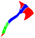 | Curved Bone Axe | 39 | Craft (Workbench) |
 | Stone Axe | 39 | Craft (Workbench) · Faction supplies |
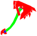 | Bone Saw Axe | 59 | Craft (Workbench) |
 | Two-Handed Metal Axe | 59 | Craft (Workbench) |
| Shoddy Bone Axe | 60 | Craft (Workbench) | |
| Speedy Work Axe | 60 | Craft (hands) | |
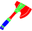 | Processing Axe | 60 | Craft (hands) |
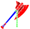 | Angled Metal Axe II | 60 | Craft (Weapon Workbench) |
Hammers
Break rock and ore, build/demolish structures (the demolish animation follows the hammer you hold) and fight · 44 obtainable
| Name | Max level | Where from | |
|---|---|---|---|
 | Wooden Club | 19 | Craft (hands) |
 | Improvised Meat Hammer | 19 | Craft (hands) |
| Improvised Metal Hammer | 19 | Craft (hands) |
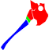 | Two-Handed Bone Hammer | 39 | Craft (Workbench) |
 | Two-Handed Stone Hammer | 39 | Craft (Workbench) |
 | Metal Hammer | 59 | Craft (Workbench) |
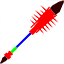 | Thorny Spine II | 60 | Craft (Weapon Workbench) |
| Lady Liberty Torch | 60 | Shop (pack) | |
| Chocolate Hammer | 60 | Craft (Workbench) | |
 | Two-Handed Horseman's Hammer | 60 | Craft (Weapon Workbench) |
| Shoddy Stone Hammer | 60 | Craft (Workbench) |
 | Shoddy Two-Handed Metal Hammer | 60 | Craft (Workbench) |
Swords and knives
One-handed weapons · knives can gather plants and branches · 31 obtainable
| Name | Max level | Where from | |
|---|---|---|---|
 | Improvised Bone Knife | 19 | Craft (hands) |
| Improvised Stone Knife | 19 | Craft (hands) |
 | Improvised Two-Handed Metal Knife | 19 | Craft (hands) |
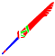 | Two-Handed Bone Knife | 39 | Craft (Workbench) |
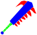 | Obsidian Knife | 39 | Craft (Workbench) |
 | Stone Work Knife | 44 | Craft (hands) |
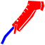 | Giant Razor | 59 | Craft (Workbench) |
 | Two-Handed Metal Knife | 59 | Craft (Workbench) |
| Shoddy Bone Knife | 60 | Craft (Workbench) |
 | Bent Bone Knife | 60 | Craft (Weapon Workbench) |
| Bone Work Knife | 60 | Craft (hands) |
| Shoddy Two-Handed Stone Knife | 60 | Craft (Workbench) |
Lances
Has a three-hit charging thrust · 8 obtainable
| Name | Max level | Where from | |
|---|---|---|---|
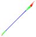 | Bone Spear | 39 | Craft (Workbench) |
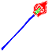 | Road Sign Spear | 39 | Craft (Workbench) |
| Stone Spear | 39 | Craft (Workbench) | |
 | Bamboo Spear | 39 | Craft (hands) |
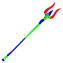 | Double-horn Spear | 59 | Craft (Workbench) |
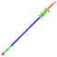 | Bone Cluster Spear | 59 | Craft (Workbench) |
 | Metal Spear | 59 | Craft (Workbench) |
 | Iron Beak Spear | 60 | Craft (Weapon Workbench) |
Bows and crossbows
Ranged weapons · 18 obtainable
| Name | Max level | Where from | |
|---|---|---|---|
 | Improvised Wooden Bow | 19 | Craft (hands) |
| Sling | 19 | Craft (hands) | |
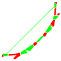 | Bone Bow | 39 | Craft (Workbench) |
 | Wooden Bow | 39 | Craft (Workbench) |
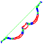 | Seagull Bone Bow | 59 | Craft (Workbench) |
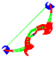 | Skull Bow | 59 | Craft (Workbench) |
 | Ironwood Bow | 59 | Craft (Workbench) |
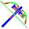 | Seagull Bone Crossbow | 59 | Craft (Workbench) |
 | Wooden Crossbow | 59 | Craft (Workbench) |
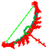 | Double-Skull Bow | 60 | Craft (Weapon Workbench) |
 | Dual-layered Bow | 60 | Craft (Workbench) |
| Shoddy Metal Bow | 60 | Craft (Workbench) | |
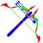 | Seagull Bone Crossbow II | 60 | Craft (Weapon Workbench) |
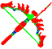 | Double-Skull Crossbow | 60 | Craft (Weapon Workbench) |
Gathering tools and repair kits
Pickaxes, shovels, saws, harpoons, hoes, needles and repair kits (for structures/clothing/tools) · 31 obtainable
| Name | Max level | Where from | |
|---|---|---|---|
 | Stone Hoe | 24 | Craft (hands) · Faction supplies |
| Makeshift Stone Hoe | 24 | Craft (hands) |
 | Makeshift Shovel | 24 | Craft (hands) |
| Wooden Shovel | 24 | Craft (hands) · Faction supplies |
 | Stone Saw | 24 | Craft (hands) · Faction supplies |
| Bone Needle | 39 | Craft (Workbench) | |
 | Bone Hoe | 44 | Craft (Workbench) · Faction supplies |
 | Bone Harpoon | 44 | Craft (hands) · Faction supplies |
 | Bone Pickaxe | 44 | Craft (Workbench) · Faction supplies |
 | Bone Saw | 44 | Craft (Workbench) · Faction supplies |
| Metal Harpoon | 60 | Craft (Workbench) · Faction supplies |
 | Metal Shovel | 60 | Craft (Workbench) · Faction supplies |
| Pickaxe | 60 | Craft (hands) |
| Metal Needle | 60 | Craft (Kiln) | |
| Quality Building Repair Kit | 60 | Craft (hands) · Shop (pack) | |
| Standard Building Repair Kit | 60 | Craft (hands) | |
| Quality Tool Repair Kit | 60 | Craft (hands) | |
| Standard Tool Repair Kit | 60 | Craft (hands) | |
| Quality Clothing Repair Kit | 60 | Craft (hands) | |
| Standard Clothing Repair Kit | 60 | Craft (hands) |
Kitchen tools
Pots, mortars, cutting boards, frying pans — they go into the tool slot of food recipes (Cooking) · 11 obtainable
| Name | Max level | Where from | |
|---|---|---|---|
| Wooden Pot | 34 | Craft (Workbench) · Faction supplies | |
| Stone Mortar | 39 | Craft (Workbench) · Faction supplies | |
| Stone Plate | 39 | Craft (Workbench) · Faction supplies | |
| Wooden Cutting Board | 49 | Craft (Workbench) · Faction supplies | |
| Earthenware Pot | 54 | Craft (hands) · Faction supplies | |
| Earthenware Mortar | 59 | Craft (hands) · Faction supplies | |
 | Frying Pan | 60 | Craft (Kiln) · Faction supplies |
| Metal Mortar | 60 | Craft (Kiln) · Faction supplies | |
| Metal Grate | 60 | Craft (Kiln) · Faction supplies | |
| Glass Pot | 60 | Craft (Kiln) · Faction supplies | |
| Glass Cutting Board | 60 | Craft (Kiln) · Faction supplies |
Instruments
7 obtainable
| Name | Max level | Where from | |
|---|---|---|---|
| Durango Drums | 60 | Craft (hands) | |
| Drum Set | 60 | Craft (hands) | |
| Xylophone | 60 | Craft (hands) | |
| Synthesizer | 60 | Craft (hands) | |
| Bass | 60 | Craft (hands) | |
| Piano | 60 | Craft (hands) | |
| Horn | 60 | Craft (hands) |